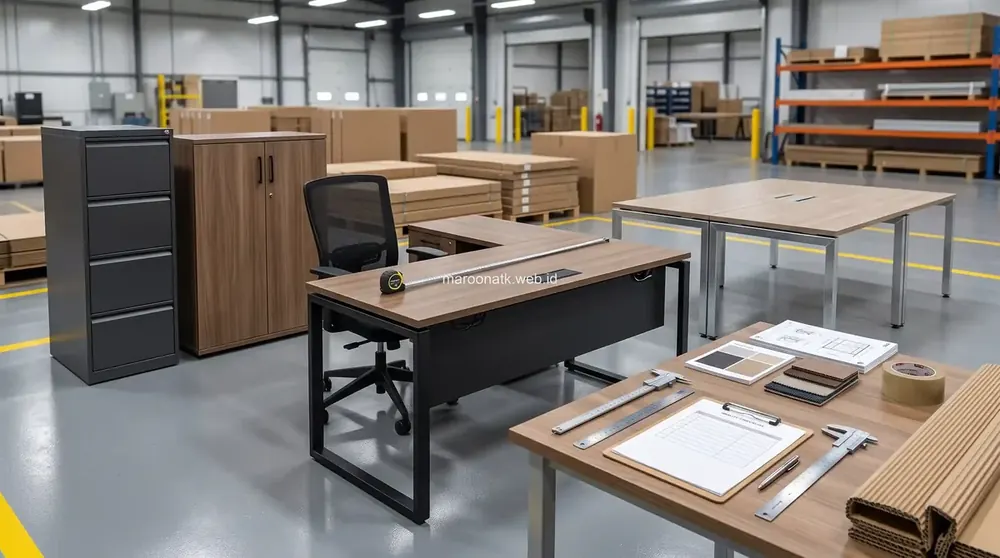
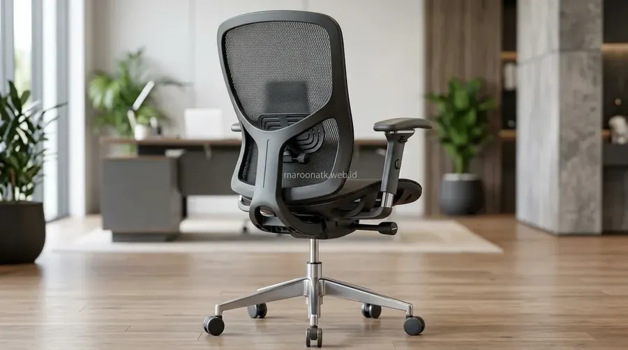
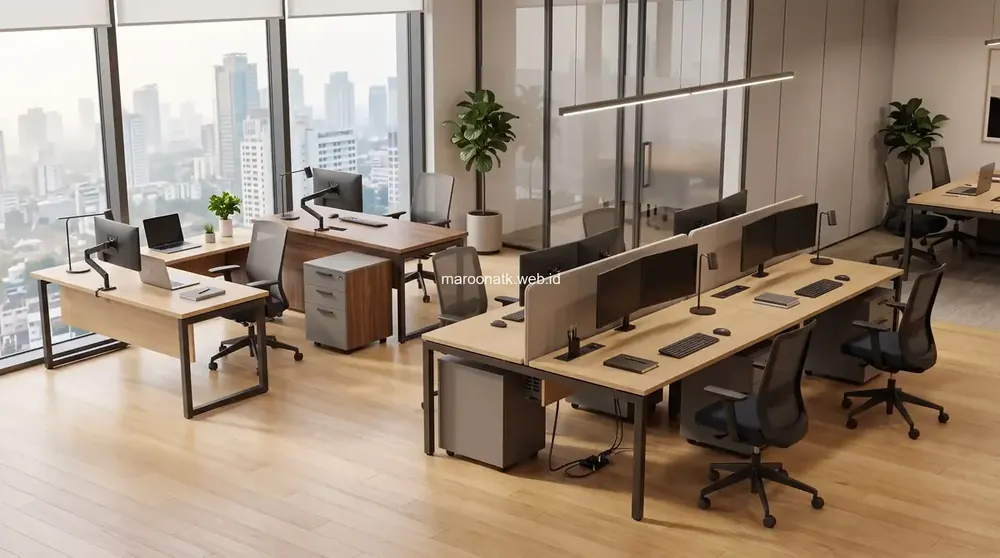

Urgensi Kenyamanan Tempat Duduk bagi Tim Back-Office Perusahaan
Penggunaan kursi kantor ergonomis sangat krusial bagi staf back-office karena menyediakan penopang tulang belakang (lumbar support) yang presisi, mendistribusikan beban tubuh secara merata, serta memungkinkan penyesuaian ketinggian dudukan dan sandaran tangan. Fasilitas ini membantu mencegah kelelahan fisik berlebih dan keluhan nyeri punggung akibat duduk seharian, sehingga menjaga kenyamanan dan fokus kerja staf.
Karyawan back-office seperti tim akuntansi, legal, data analyst, HR, dan operasional administrasi memiliki pola kerja yang sangat intens di depan komputer. Berbeda dengan tim lapangan yang aktif bergerak, staf back-office dapat menghabiskan 7 hingga 9 jam setiap harinya dalam posisi duduk statis.
Ketika perusahaan masih menggunakan kursi kerja standar tanpa penopang ergonomis, tubuh staf dipaksa untuk beradaptasi dengan bentuk kursi yang kaku. Akibatnya, postur duduk membungkuk (slouching) sering kali terjadi tanpa disadari. Dalam jangka panjang, kondisi ini menimbulkan ketegangan pada otot leher, bahu, dan punggung bawah. Dampak langsung yang kerap dialami manajemen adalah meningkatnya keluhan lelah, penurunan konsentrasi di jam-jam krusial, hingga naiknya angka izin sakit staf akibat rasa pegal yang berulang.

SOP Pengadaan Furniture Kantor B2B: Panduan Lengkap Purchasing Team
Tahapan standar operasional prosedur pengadaan furniture kantor korporat agar transparan dan sesuai spesifikasi.
Mengenal Komponen dan Fitur Kunci Kursi Kantor Ergonomis
Sebuah kursi kantor ergonomis dirancang dengan prinsip biomekanika untuk menyelaraskan struktur kursi dengan lekukan alami tubuh manusia. Berikut adalah komponen utama yang membedakannya dari kursi kerja biasa:
1. Dukungan Tulang Belakang (Lumbar Support)
Tulang belakang manusia memiliki lengkungan alami ke dalam pada bagian pinggang (lordotik). Kursi ergonomis modern dilengkapi dengan bantalan lumbar support yang dapat disetel ketinggian dan kedalamannya. Penopang ini menahan punggung bawah agar tidak melengkung ke belakang saat staf fokus mengetik, mendistribusikan tekanan pada bantalan ruas tulang belakang secara merata.
2. Sandaran Punggung (Backrest) & Breathable Mesh
Material sandaran punggung berbahan jaring elastis (breathable mesh) memiliki sirkulasi udara yang baik, mencegah rasa gerah di punggung meski digunakan seharian di ruang kantor ber-AC. Selain itu, mekanisme tilt-tension dan reclining lock memungkinkan pengguna untuk bersandar sejenak hingga sudut 110–120 derajat saat membaca laporan tebal guna meredakan tekanan pada otot punggung.
3. Ketinggian Dudukan (Seat Height Adjustment)
Sistem hidrolik gas lift memudahkan pengaturan tinggi dudukan secara presisi. Ketinggian ideal tercapai ketika telapak kaki berpijak rata di lantai dan sudut paha membentuk 90 hingga 100 derajat terhadap betis. Posisi ini memastikan peredaran darah di area paha bawah dan kaki mengalir lancar tanpa terhambat tepi depan dudukan.
4. Sandaran Tangan Multi-Arah (Adjustable Armrest)
Sandaran tangan yang dapat disetel naik-turun (3D/4D armrest) berfungsi menopang berat siku dan lengan bawah saat mengetik. Hal ini sangat penting untuk mencegah ketegangan pada otot trapezius dan pundak, sekaligus menjaga pergelangan tangan sejajar dengan keyboard dan mouse.

Detail struktur lumbar support, armrest adjustable, dan mekanisme reclining yang mendukung posisi duduk dinamis sepanjang hari kerja.
5. Sandaran Kepala (Adjustable Headrest)
Bagi staf yang sering melakukan analisis dokumen atau menghadiri rapat virtual intensif, sandaran kepala yang dapat diatur sudut dan tingginya memberikan tumpuan bagi tengkuk leher, mengurangi ketegangan pada otot servikal saat posisi kepala sedikit bersandar.

Panduan Teknis Memilih Material Pengadaan Furniture Kantor Awet
Perbandingan material kayu olahan, HPL, dan rangka baja untuk ketahanan aset furniture kantor jangka panjang.
Tabel Komparasi: Kursi Kantor Biasa vs Kursi Kantor Ergonomis
Berikut adalah perbandingan fitur dan dampaknya terhadap kenyamanan operasional karyawan:
| Aspek Penilaian | Kursi Kantor Standar / Biasa | Kursi Kantor Ergonomis | Dampak pada Karyawan |
|---|---|---|---|
| Lumbar Support | Sandaran rata atau cekungan statis tanpa setelan | Penyangga fleksibel yang dapat diatur tinggi & kedalaman | Menjaga lekukan alami tulang belakang, mencegah pegal pinggang |
| Fleksibilitas Dudukan | Ketinggian tetap atau hidrolik dasar satu arah | Hidrolik halus, sliding seat depth, sudut rebah multi-kunci | Kaki menapak nyaman, sirkulasi darah paha lancar |
| Armrest (Sandaran Tangan) | Plastik kaku mati yang menempel pada struktur bodi | Dapat diatur naik-turun, maju-mundur, dan rotasi (3D/4D) | Bahu rileks, pergelangan tangan sejajar meja kerja |
| Material Sandaran | Busa tebal lapis kain sintetis yang memerangkap panas | Breathable mesh berkualitas tinggi dengan sirkulasi udara | Punggung tetap sejuk dan nyaman selama jam kerja panjang |
| Durabilitas Struktur | Bodi plastik tipis dengan kaki nylon standar | Rangka nilon komposit/aluminium kokoh dengan roda PU hening | Masa pakai lebih panjang, stabil, dan aman menopang beban |

Inspirasi Desain Meja Kerja Modern Minimalis untuk Kantor B2B
Padukan kursi ergonomis dengan meja kerja modular yang efisien, rapi, dan menunjang estetika modern.
Integrasi Ergonomi: Menyelaraskan Kursi, Meja, dan Posisi Monitor
Memiliki kursi kerja yang baik adalah langkah awal, namun efektivitasnya akan maksimal bila diselaraskan dengan tata letak meja kerja dan perangkat komputer staf. Berikut prinsip penyelarasan ergonomi meja kerja:
- Jarak Pandang Layar Monitor: Tempatkan monitor berjarak sekitar 50–70 cm dari mata (sepanjang rentangan lengan). Bagian sepertiga atas layar harus sejajar dengan ketinggian mata agar leher tidak menunduk berlebihan.
- Ketinggian Meja dan Lengan: Sesuaikan tinggi kursi hingga lengan bawah membentuk sudut 90 derajat saat diletakkan di atas meja, memungkinkan pengetikan tanpa mengangkat bahu.
- Ruang Gerak Kaki: Pastikan bagian bawah meja bebas dari tumpukan kardus atau CPU besar agar kaki staf dapat bergerak leluasa dan berganti posisi secara berkala.
- Peregangan Mikro Teratur: Dorong staf untuk melakukan peregangan ringan selama 1–2 menit setiap 60 menit bekerja guna melancarkan sirkulasi darah dan menyegarkan fokus pikiran.
Dalam perencanaan pengadaan furniture kantor perusahaan, memilih perpaduan antara meja kerja modern dengan kursi kantor ergonomis yang tepat merupakan bentuk investasi fasilitas kerja yang berdampak langsung pada kelancaran operasional harian tim back-office.
Eksplorasi Pilihan Kursi Kantor Ergonomis Berkualitas
Dapatkan Rekomendasi Kursi Staf & Konsultasi Kebutuhan Ruang Kerja Kantor Anda
Temukan beragam model kursi kantor ergonomis yang nyaman dan kokoh untuk kantor modern bersama tim spesialis MAROON ATK.
Kesimpulan: Kenyamanan Kerja Fondasi Efisiensi Operasional
Rangkuman Poin Penting
Menyediakan fasilitas kursi kerja yang ergonomis bagi karyawan back-office bukan sekadar peningkatan fasilitas fisik, melainkan langkah strategis perusahaan dalam menjaga kesehatan postur dan kenyamanan kerja tim.
- Proteksi Postur: Fitur lumbar support dan sandaran fleksibel menjaga keselarasan tulang belakang selama jam kerja.
- Kenyamanan Jangka Panjang: Bahan mesh bersirkulasi baik dan bantalan cetak berkualitas mencegah kelelahan berlebih.
- Investasi Terarah: Memilih kursi berkualitas mengurangi potensi penggantian unit rusak secara berulang dan mendukung suasana kerja yang lebih positif.
Pertanyaan Umum (FAQ) Kursi Kantor Ergonomis
Kursi kantor ergonomis dirancang dengan fleksibilitas pengaturan dinamis seperti penyangga tulang belakang (lumbar support), tinggi dudukan hidrolik, sandaran tangan (armrest) yang dapat disetel, serta sandaran mesh bersirkulasi udara yang mengikuti kurva alami tubuh saat duduk berjam-jam.
Posisi duduk ideal adalah telapak kaki menapak rata di lantai, lutut membentuk sudut 90 derajat sejajar pinggul, punggung bawah bersandar penuh pada lumbar support, lengan bertumpu rileks pada armrest sejajar tinggi meja, dan posisi mata sejajar sepertiga atas layar monitor.
Menyediakan kursi kantor ergonomis membantu mengurangi kelelahan otot, ketegangan leher, dan rasa pegal punggung akibat postur statis, sehingga karyawan dapat bekerja lebih nyaman, fokus, dan meminimalkan hari izin sakit karena gangguan muskuloskeletal ringan.
Fitur penting meliputi adjustable lumbar support, sandaran berbahan breathable mesh, mekanisme reclining dengan pengunci multi-posisi, dudukan busa cetak densitas tinggi, hidrolik kelas komersial bersertifikasi, serta roda nilon yang berputar mulus di berbagai permukaan lantai.

Arby Ardiansyah
Praktisi pengadaan B2B berpengalaman lebih dari 5 tahun dalam tata kelola rantai pasok perlengkapan kantor, audit fasilitas kerja, dan standardisasi efisiensi operasional kantor di Indonesia.